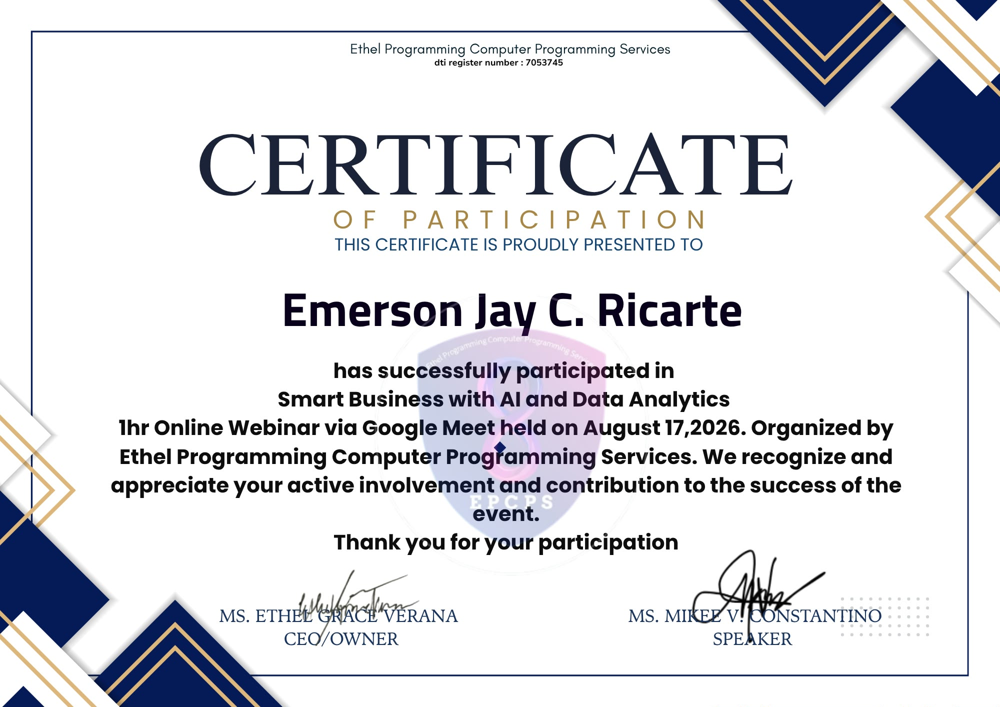

Certificate of Participation — Smart Business with AI and Data Analytics, Ethel Programming Computer Programming Services, August 17, 2026
Attendance form — response recorded, August 17, 2026
On August 17, 2026, I attended the one-hour online webinar "Smart Business with AI and Data Analytics," conducted via Google Meet and organized by Ethel Programming Computer Programming Services. The session explored how businesses can use data analytics and artificial intelligence together to make faster, better-informed decisions.
Data becomes valuable only once it's turned into a decision someone can actually act on.
The facilitators walked through how AI tools can process large volumes of business data — sales patterns, customer behavior, operational metrics — far faster than manual analysis, and how this speed lets smaller businesses respond to trends in something closer to real time. Several practical examples showed AI being used not to replace judgment, but to surface patterns a person might otherwise miss.
What stood out was the reminder that data analytics tools are only as useful as the questions asked of them — the technology handles the processing, but the direction still has to come from a clear business goal.
AI-powered analytics can process business data far faster than manual methods, enabling quicker decisions.
Data is most useful when it's tied to a specific business question rather than analyzed for its own sake.
AI tools work best as a support for human judgment, not a replacement for it.
Smaller businesses can use data analytics to spot and respond to trends much earlier than before.